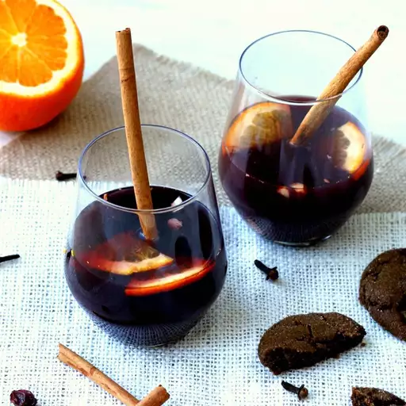

Old-Fashioned Swedish Glogg

Description
Glogg is Swedish infused wine. Usually served during the holiday season, it's similar to mulled wine - but it is not quite the same thing. Traditionally, the drink is set on fire so that the sugar granules completely dissiolve. A boozy blend of port wine, bourbon, whiskey, and white rum, this drink carries added flavor and taste from cinnamon, cloves, cardamom, and raisins and almonds. Do not fret!! Glogg making may seem intimidating at first, but it is actually not that difficult to do, and the process is well facilitated by a great recipe.
Ingredients
- 5 (750 milliliter) bottles port wine
- 1 (750 milliliter) bottle 100 proof bourbon whiskey
- 1 (750 milliliter) bottle white rum
- 1 (3-inch) strip of orange peel
- 1 (3-inch) strip of orange peel
- 4 whole cloves
- 3 whole cardamom pods, cracked
- 1 (8-inch) square of cheesecloth
- 3/4 cup of white sugar
- 1 (15 ounce) package dark raisins
- 1 (6 ounce) package blanched slivered almonds
Steps:
- Heat port wine in a large stockpot with a lid over medium heat until just below the simmering point. Add bourbon and rum; heat until just below simmering. Save the bottles and their caps for storing leftover glogg.
- Meanwhile, place cinnamon stick, orange peel, cloves, and cardamom pods in the center of the cheesecloth square. Gather edges of the cheesecloth and tie with kitchen twine to secure; set aside.
- When wine mixture is very hot but not boiling, carefully light it with a long handled match. Wearing a heatproof cooking mitt, carefully pour sugar into the flames; let mixture burn for 1 minute. Place the lid on the stockpot to extinguish the flames and turn off the heat. Let mixture cool, covered, about 10 minutes.
- Add the cheesecloth spice bundle, raisins, and almonds to warm wine mixture;let it cool to room temperature, about 1 hour.
- Strain cooled glogg and reserve the raisins and almonds.
- To serve: Pour glogg into a saucepan and warm over medium-low heat until hot but not simmering, about 5 minutes. Ladle 3 ounces of warmed glogg into a small coffee cup or small Swedish-style glogg mug, and garnish each serving with a few reserved raisinns and almonds.
link to original recipe